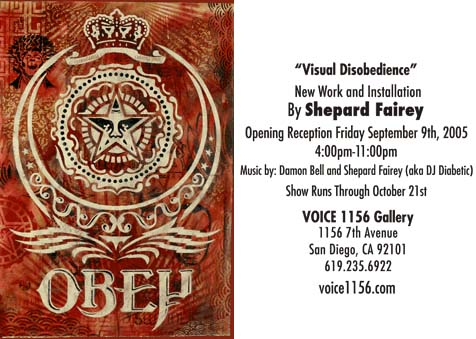
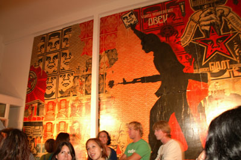
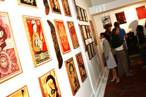
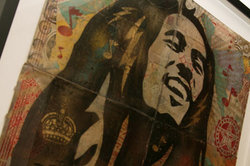

Visual Disobedience (Voice 1156 Gallery)
From The Giant: The Definitive Obey Giant Site
|  |
{kind=link}
Shepard Fairey's art show Visual Disobedience ran at the Voice 1156 Gallery from September 9 to October 21, 2005.
From Voice 1156 Gallery:
Visual Disobedience
New Work and Installation by Shepard Fairey
September 9 - October 21
Opening reception Friday September 9th 2005
4:00pm - 11:00pm
Music by Damon Bell and Shepard Fairey (aka DJ Diabetic)
Shepard's presence has been found on every street corner in the world, to posters in college dorm rooms, to tee shirts on Japanese kids. The Voice 1156 gallery is giving you a chance to view "Visual Disobedience," a solo exhibition by Shepard Fairey, through the month of October due to the popularity of the Giant vs. Giant show in January. This is your opportunity to see art history in the making.
For more information about Shepard Fairey, visit obeygiant.com.
Article from Sign on San Diego. Please note, this article was published to hype the "Visual Disobedience" show even though the interview was done in conjunction with Giant vs Giant.
Check out new works by artist Shepard Fairey at Voice 1156 gallery. The opening reception for "Visual Disobedience" takes place from 4 to 11 p.m. on Friday, Sept. 9, 2005.
By AnnaMaria Stephens
SIGNONSANDIEGO STAFF WRITER
January 5, 2005
Even if you haven't heard of Shepard Fairey, you've probably seen his work. Fifteen years ago, he created an image that has made its way around the world many times over — as a mimeographed sticker plastered on stop signs and shop windows, as massive posters glued over billboards, as graffiti and tattoos, as a neverending stream of bootlegged versions.
The face of late World Wrestling champ Andre the Giant, simplified by stencil to a strong graphic image, started as a joke and quickly turned into what Fairey calls "an experiment in phenomenology." With the help of an eager posse who took his image and spread it, Fairey shook up the way people think about art and public space.
The story of discovering Andre is similar to most who stumble upon it: Once you have your first sighting, you begin to see the image everywhere, not just in your hometown but all over the world. Fairey distributes the basic image for reproduction, free of charge, to keep the project going.
Fairey lived in San Diego for a few years after moving here from the East Coast, where he attended the highly regarded Rhode Island School of Design (which also produced such alums as the Talking Heads' David Byrne and Chris Frantz). For someone who at a young age was rapidly becoming an internationally known pop-culture icon, Fairey was modest and always eager to discuss his project with anyone who was curious. His presence in the community helped kick new life into San Diego's underground art scene.
Fairey has since moved to Los Angeles, where he opened a graphic design/ad firm called Studio Number One. This interview took place in January 2005, before the "Giant vs. Giant" show at Voice 1156. Fairey's second 2005 show at the gallery, entitled "Visual Disobedience," opens Friday Sept. 9, 2005.
SignOnSanDiego: I know you've answered this a thousand times, but can you please tell us how the Obey Giant phenomenon took root?
Shepard Fairey: It started in 1989. I was working at a skate shop making bootleg punk shirts and stickers for the shop and I came across an ad for wrestling when I was trying to teach a friend how to make stencils. The ad was of Andre the Giant and I thought it was funny and said, "Why don't you practice on this." He totally refused to make a stencil out of that because he said it was stupid. So I made a sticker and put it around the shops and clubs as an inside joke. I liked the idea of proliferating something that was totally absurd. It really surprised me that people were so curious about what the image was, when they'd see it on stop signs and other places. It's developed into something more as I observed the sociology of image proliferation and people being confronted with something they didn't recognize or understand.
I thought, if I'm creating a buzz with these few stickers, what if I put a lot of effort into it? I was interested in how people reacted to things in their environment. It's about the use of public space and the dynamics of public space, about what was allowed and what wasn't allowed. The criteria wasn't necessarily aesthetic... more about what facilitated commerce and what didn't, not what looked good. To me, being bombarded with billboards and obnoxious store signage was just as offensive or more so than graffiti. But [advertising] facilitates commerce.
Would you say that as an artistic statement, Obey Giant gets its meaning from the audience's reaction?
SF: [Obey Giant] is a hollow vessel for people's interpretations, sort of like a Rorschach test. I tried to keep it a little bit obtuse, with a sense of humor, and the placements would be interesting to people. You put the pieces of the puzzle together the way you feel is appropriate. It was funny to see the reactions, ranging from people thinking it's funny to them thinking it's a satanic cult.
As more people find out about it — and at this point it's pretty well-known — does its impact change?
SF: Anything in pop culture goes through a cycle. First, it's new and cutting edge, embraced by people who are the avant-garde. They're trend-setters and they influence people and it catches on with hipsters. Once it gets too popular, the hipsters totally abandon it. I feel like I've been lucky in that a lot of people who were into my work saw it as making fun of that paradigm and therefore they were immune to abandoning it. But then of course other people who were purely into my work because it was the new cool thing think it's played out. Really what I was going for wasn't the embrace of the hip crowd, but stimulating the person who never thought about the control of public space or propaganda of any nature, whether it's ads or a political slogan. It's more to get them to think about that stuff, and I think it still works on that level. It still provokes people who see it and don't know what it is to Google it, or ask their friends, or look for more information.
The more I have become successful as a designer, the more people can see how you can become something with little to start with. Everything I've done has been on a shoestring; I've been resourceful. People who feel powerless should see that they can pull something big off. There are ways to make it pursuing your passion, and I think that is really important. Even if I lost the underdog status — [and that status] is always important to get the sympathy of the cool kids — [the success of Obey Giant] still should be inspiring to anyone who's not a player-hater.
Years ago, before I ever met you, I sent you a letter, and you sent me a package of stickers, stencils and other cool stuff. Why did you take the time to do something like that?
SF: When a person writes a letter, I send them something back. I remember when I was that guy writing letters to someone, how much it meant to me when I got a response, whether it be from an artist, skateboarder, whatever. I don't feel superior, just that maybe I'm further along. Inspiring them and validating them in response to their validation of me is important.
You've got two books published and you regularly exhibit in galleries. What's up next for you?
SF: I have a big book in the works. It's called Supply and Demand, and it's a 15-year be-all-end-all of the project up to this point. What I've been developing is a case study worthy of examination, and even though lots of facets of it have been touched on, the whole thing hasn't been presented so that people can see all aspects of it. The book includes 300-something pages about art, poster art, stickers, the arrests I've been through, the hate mail, the bootleg stickers, all the ins and outs of the project and its evolution. It's kind of weird to set out to do something that I called an "experiment in phenomenology." When have you done enough to document it and present something? At the 15-year point, I figured I've done enough to put it together. It's also a nice segue. The Obey Giant has a life of its own. If I want to create something else, I have this document that was created at the peak of the movement.
Voice 1156 Gallery images from "Visual Disobedience":
|  |
{kind=link}
|  |  |
{kind=link}
{kind=link}
{kind=link}
{kind=link}
 |
© Copyright |
|---|
| This page contains an image or images of drawings, paintings, photographs, prints, or other two-dimensional works of art, for which the copyright is presumably owned by either the artist who produced the image, the person who commissioned the work, or the heirs thereof. It is believed that the use of low-resolution images of works of art for critical commentary on the work in question, the artistic genre or technique of the work of art, or the school to which the artist belongs on the English-language website thegiant.org, hosted on servers in the United States, qualifies as fair use under United States copyright law. |